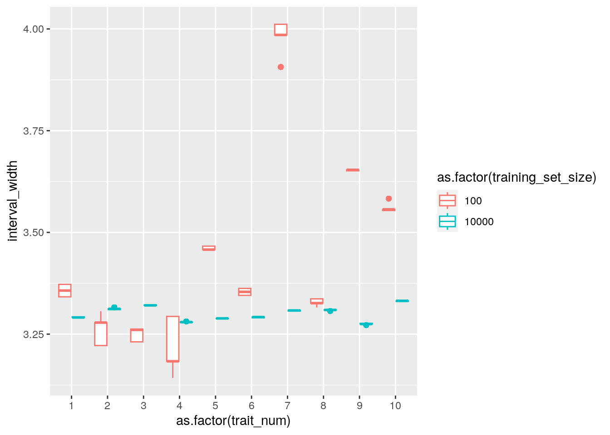

Code
library(magrittr)First, simulate genotype data for 11,000 subjects.
library(magrittr)set.seed(2023-04-15)
n <- 11000
n_traits <- 10
n_snp <- 1
# simulate genotypes matrix
geno <- matrix(sample(c(0,1,2), n*n_snp, replace=TRUE, prob=c(0.25,0.5,0.25)), nrow=n, ncol=n_snp)
# simulate phenotype
beta <- 10
y <- as.numeric(geno %*% beta) %*% t(rep(1, n_traits)) + matrix(data = rnorm(n * n_traits), nrow = n, ncol = n_traits)
# prepare for splitting into training and testing
n_test <- 1000
# get test subject ids
test_ids <- sample(1:n, n_test, replace = FALSE)
# organize data
dat <- tibble::as_tibble(y) %>%
dplyr::rename_with(function(x){ num <- stringr::str_extract(x, "[0-9]+")
return(paste0("pheno", num))}
) %>%
dplyr::bind_cols(geno %>% tibble::as_tibble() %>% dplyr::rename(geno = 1)) %>%
dplyr::mutate(id = 1:n) %>% # fix this when using more than one SNP
dplyr::mutate(in_test_set = id %in% test_ids)Warning: The `x` argument of `as_tibble.matrix()` must have unique column names if
`.name_repair` is omitted as of tibble 2.0.0.
ℹ Using compatibility `.name_repair`.# split into training and testing
training <- dat %>% dplyr::filter(!in_test_set)
testing <- dat %>% dplyr::filter(in_test_set)
testing2 <- testing %>% dplyr::mutate(fold = as.integer(NA))
# use all training with leave K out
alpha <- 0.1
n_folds <- 5
n_train <- nrow(training)
# partition training data into 5 folds
folds <- split(training$id, sample(rep(1:n_folds, length.out = n_train)))
training2_pre <- training %>%
dplyr::mutate(fold = id %>% purrr::map_int(~which(sapply(folds, function(x) . %in% x))))Above, we specified the number of replicates for the simulations. We created 10 replicate traits for the same 1.1^{4} subjects. Note that each subject has only 1 SNPs.
tictoc::tic() # timing
tl <- list()
n_per_fold_values <- c(2000, 20)
for (n_per_fold in n_per_fold_values){
training2 <- training2_pre %>%
dplyr::group_by(fold) %>%
dplyr::slice_sample(n = n_per_fold) %>%
dplyr::ungroup()
# store each trait's outputs
out <- list()
# loop over traits
for (trait_num in 1:n_traits){
tr2_one_trait <- training2 %>%
dplyr::select(id, fold, geno, tidyselect::ends_with(paste0("pheno", trait_num))) %>%
dplyr::rename(pheno = tidyselect::ends_with(paste0("pheno", trait_num)))
te2_one_trait <- testing2 %>%
dplyr::select(id, fold, geno, tidyselect::ends_with(paste0("pheno", trait_num))) %>%
dplyr::rename(pheno = tidyselect::ends_with(paste0("pheno", trait_num)))
# regress leaving one fold out
preds <- list()
for (fold_num in 1:n_folds) {
# get training data
train <- tr2_one_trait %>% dplyr::filter(fold != fold_num)
# get testing data
test <- tr2_one_trait %>% dplyr::filter(fold == fold_num)
# fit model
fit <- lm(pheno ~ geno, data = train)
# predict
foo <- test %>% dplyr::bind_rows(te2_one_trait)
foo$pred <- predict(fit, newdata = foo)
foo$fold_left_out <- fold_num
result <- foo %>%
dplyr::mutate(beta1_hat = coef(fit)[2],
beta0_hat = coef(fit)[1],
se_beta1_hat = summary(fit)$coefficients[2, 2],
se_beta0_hat = summary(fit)$coefficients[1, 2]
)
# save predictions
preds[[fold_num]] <- result
}
# assemble predicted values
# get absolute residuals
preds_training <- preds %>%
dplyr::bind_rows() %>%
dplyr::filter(!is.na(fold)) %>% # keep only training data
dplyr::mutate(absolute_residual = abs(pheno - pred)) %>%
dplyr::select( - fold_left_out)
preds_test <- preds %>%
dplyr::bind_rows() %>%
dplyr::filter(is.na(fold))
# get indexes
plus_index <- ceiling((1 - alpha) * (nrow(preds_training) + 1))
minus_index <- floor(alpha * (nrow(preds_training) + 1))
# go one by one through test set (testing2)
test_list <- list()
for (i in 1:nrow(testing2)){
tt <- testing2[i, ]
pt2 <- preds_test %>%
dplyr::filter(id == tt$id) %>% # our only use of tt
dplyr::rename_with(function(x)paste0("test_", x))
# pt2 contains the five predicted values for a single test subject
nrow(pt2) # 5
preds_all <- preds_training %>%
dplyr::left_join(pt2, by = c("fold" = "test_fold_left_out")) %>%
dplyr::mutate(test_fitted_plus_absolute_residual = test_pred + absolute_residual,
test_fitted_minus_absolute_residual = test_pred - absolute_residual)
uu <- sort(preds_all$test_fitted_plus_absolute_residual)[plus_index]
ll <- sort(preds_all$test_fitted_minus_absolute_residual)[minus_index]
# make a tibble with exactly one row
test_list[[i]] <- preds_all %>%
dplyr::select(test_id, test_geno, test_pheno, test_beta1_hat, fold) %>%
dplyr::mutate(lower = ll, upper = uu) %>%
dplyr::distinct() %>%
tidyr::pivot_wider(names_from = fold,
values_from = test_beta1_hat,
names_prefix = "beta1_hat_fold_"
)
}
test_tib <- test_list %>%
dplyr::bind_rows() %>%
dplyr::mutate(in_interval = test_pheno >= lower & test_pheno <= upper) %>%
dplyr::mutate(interval_width = upper - lower) %>%
dplyr::mutate(training_set_size = n_per_fold * n_folds,
trait_num = trait_num)
out[[trait_num]] <- test_tib
}
tl[[as.character(n_per_fold * n_folds)]] <- out
}
tictoc::toc() # timing534.608 sec elapsed#test_tib_thin <- test_tib %>%
# dplyr::select(test_id, test_geno)
tt_intermediate <- tl %>%
dplyr::bind_rows(.id = "id")
tt_intermediate %>%
dplyr::group_by(training_set_size, trait_num) %>%
dplyr::summarise(mean_interval_width = mean(interval_width),
sd_interval_width = sd(interval_width),
mean_in_interval = mean(in_interval),
sd_in_interval = sd(in_interval),
beta1_hat_fold_1 = mean(beta1_hat_fold_1),
beta1_hat_fold_2 = mean(beta1_hat_fold_2),
beta1_hat_fold_3 = mean(beta1_hat_fold_3),
beta1_hat_fold_4 = mean(beta1_hat_fold_4),
beta1_hat_fold_5 = mean(beta1_hat_fold_5)
) %>%
dplyr::ungroup() %>%
dplyr::mutate(mean_b1 = purrr::pmap_dbl(.l = list(beta1_hat_fold_1,
beta1_hat_fold_2,
beta1_hat_fold_3,
beta1_hat_fold_4,
beta1_hat_fold_5),
.f = function(x, y, z, w, v) mean(c(x, y, z, w, v))),
sd_b1 = purrr::pmap_dbl(.l = list(beta1_hat_fold_1,
beta1_hat_fold_2,
beta1_hat_fold_3,
beta1_hat_fold_4,
beta1_hat_fold_5),
.f = function(x, y, z, w, v) sd(c(x, y, z, w, v)))
) %>%
knitr::kable() %>%
print()`summarise()` has grouped output by 'training_set_size'. You can override using
the `.groups` argument.| training_set_size | trait_num | mean_interval_width | sd_interval_width | mean_in_interval | sd_in_interval | beta1_hat_fold_1 | beta1_hat_fold_2 | beta1_hat_fold_3 | beta1_hat_fold_4 | beta1_hat_fold_5 | mean_b1 | sd_b1 |
|---|---|---|---|---|---|---|---|---|---|---|---|---|
| 100 | 1 | 3.353573 | 0.0129964 | 0.919 | 0.2729716 | 10.139861 | 10.347822 | 10.216658 | 10.283637 | 10.228992 | 10.243394 | 0.0777273 |
| 100 | 2 | 3.269282 | 0.0311728 | 0.907 | 0.2905778 | 10.029817 | 10.027591 | 10.082244 | 10.032147 | 9.916443 | 10.017648 | 0.0609760 |
| 100 | 3 | 3.246337 | 0.0152826 | 0.890 | 0.3130463 | 10.233641 | 10.263063 | 10.217109 | 10.313080 | 10.323161 | 10.270011 | 0.0470362 |
| 100 | 4 | 3.229049 | 0.0659925 | 0.901 | 0.2988115 | 10.335762 | 10.295860 | 10.263683 | 10.117457 | 10.293189 | 10.261190 | 0.0843390 |
| 100 | 5 | 3.460026 | 0.0038258 | 0.909 | 0.2877530 | 9.997463 | 9.960094 | 9.997248 | 10.019471 | 9.963694 | 9.987594 | 0.0251704 |
| 100 | 6 | 3.355759 | 0.0073000 | 0.897 | 0.3041110 | 10.018040 | 10.077735 | 10.142020 | 9.990942 | 10.041804 | 10.054108 | 0.0585852 |
| 100 | 7 | 3.980449 | 0.0416188 | 0.952 | 0.2138732 | 10.003445 | 10.069239 | 10.034488 | 10.196176 | 10.108486 | 10.082367 | 0.0747129 |
| 100 | 8 | 3.326653 | 0.0074721 | 0.907 | 0.2905778 | 10.113209 | 10.096988 | 10.119445 | 10.129327 | 10.132087 | 10.118211 | 0.0140808 |
| 100 | 9 | 3.653136 | 0.0019625 | 0.938 | 0.2412762 | 9.985875 | 10.193415 | 10.082621 | 10.138359 | 9.943896 | 10.068833 | 0.1037255 |
| 100 | 10 | 3.561284 | 0.0119700 | 0.917 | 0.2760203 | 9.969111 | 9.865656 | 9.826659 | 9.741551 | 9.998203 | 9.880236 | 0.1050377 |
| 10000 | 1 | 3.290953 | 0.0010846 | 0.918 | 0.2745020 | 9.977913 | 9.984978 | 9.990252 | 9.986172 | 9.980599 | 9.983983 | 0.0048316 |
| 10000 | 2 | 3.312527 | 0.0020374 | 0.912 | 0.2834367 | 9.982828 | 9.974832 | 9.967156 | 9.985279 | 9.985672 | 9.979154 | 0.0080021 |
| 10000 | 3 | 3.320756 | 0.0006827 | 0.904 | 0.2947386 | 9.982968 | 9.988185 | 9.993088 | 9.996586 | 9.988597 | 9.989885 | 0.0051858 |
| 10000 | 4 | 3.279787 | 0.0008393 | 0.909 | 0.2877530 | 10.019184 | 10.022152 | 10.013322 | 10.017043 | 10.011324 | 10.016605 | 0.0043670 |
| 10000 | 5 | 3.288617 | 0.0002318 | 0.891 | 0.3117952 | 9.987089 | 9.981302 | 9.983809 | 9.983244 | 9.982069 | 9.983502 | 0.0022316 |
| 10000 | 6 | 3.291975 | 0.0012743 | 0.888 | 0.3155243 | 9.992487 | 9.984260 | 9.978471 | 9.968695 | 9.989893 | 9.982761 | 0.0095393 |
| 10000 | 7 | 3.307993 | 0.0007978 | 0.905 | 0.2933617 | 10.007027 | 9.996307 | 10.003696 | 10.003574 | 10.010460 | 10.004213 | 0.0052467 |
| 10000 | 8 | 3.308931 | 0.0010771 | 0.905 | 0.2933617 | 10.000219 | 10.007251 | 10.001309 | 10.010352 | 9.991695 | 10.002165 | 0.0071944 |
| 10000 | 9 | 3.274744 | 0.0014894 | 0.906 | 0.2919747 | 10.000456 | 10.014163 | 10.013602 | 10.021682 | 10.026449 | 10.015270 | 0.0098684 |
| 10000 | 10 | 3.331720 | 0.0007399 | 0.897 | 0.3041110 | 10.013960 | 10.004986 | 10.006299 | 10.002682 | 10.014836 | 10.008553 | 0.0054997 |
library(ggplot2)
tt_intermediate %>%
ggplot(aes(y = interval_width, colour = as.factor(training_set_size), x = as.factor(trait_num))) +
geom_boxplot()
ggsave(here::here("figures", "interval_width_boxplot.png"), width = 10, height = 10)sessioninfo::session_info()─ Session info ───────────────────────────────────────────────────────────────
setting value
version R version 4.2.3 (2023-03-15)
os Ubuntu 18.04.6 LTS
system x86_64, linux-gnu
ui X11
language en_US:
collate en_US.UTF-8
ctype en_US.UTF-8
tz America/Detroit
date 2023-04-23
pandoc 1.19.2.4 @ /usr/bin/ (via rmarkdown)
─ Packages ───────────────────────────────────────────────────────────────────
package * version date (UTC) lib source
cli 3.6.1 2023-03-23 [1] CRAN (R 4.2.3)
colorspace 2.1-0 2023-01-23 [1] CRAN (R 4.2.2)
digest 0.6.31 2022-12-11 [1] CRAN (R 4.2.2)
dplyr 1.1.1 2023-03-22 [1] CRAN (R 4.2.3)
evaluate 0.20 2023-01-17 [1] CRAN (R 4.2.2)
fansi 1.0.4 2023-01-22 [1] CRAN (R 4.2.2)
farver 2.1.1 2022-07-06 [1] CRAN (R 4.2.3)
fastmap 1.1.1 2023-02-24 [1] CRAN (R 4.2.3)
generics 0.1.3 2022-07-05 [1] CRAN (R 4.2.3)
ggplot2 * 3.4.2 2023-04-03 [1] CRAN (R 4.2.3)
glue 1.6.2 2022-02-24 [1] CRAN (R 4.2.0)
gtable 0.3.3 2023-03-21 [1] CRAN (R 4.2.3)
here 1.0.1 2020-12-13 [2] CRAN (R 4.1.1)
htmltools 0.5.5 2023-03-23 [1] CRAN (R 4.2.3)
htmlwidgets 1.6.2 2023-03-17 [1] CRAN (R 4.2.2)
jsonlite 1.8.4 2022-12-06 [1] CRAN (R 4.2.3)
knitr 1.42 2023-01-25 [1] CRAN (R 4.2.3)
labeling 0.4.2 2020-10-20 [2] CRAN (R 4.0.3)
lifecycle 1.0.3 2022-10-07 [1] CRAN (R 4.2.2)
magrittr * 2.0.3 2022-03-30 [1] CRAN (R 4.2.0)
munsell 0.5.0 2018-06-12 [2] CRAN (R 4.0.3)
pillar 1.9.0 2023-03-22 [1] CRAN (R 4.2.3)
pkgconfig 2.0.3 2019-09-22 [2] CRAN (R 4.0.3)
purrr 1.0.1 2023-01-10 [1] CRAN (R 4.2.2)
R6 2.5.1 2021-08-19 [2] CRAN (R 4.1.1)
ragg 1.2.5 2023-01-12 [1] CRAN (R 4.2.2)
rlang 1.1.0 2023-03-14 [1] CRAN (R 4.2.2)
rmarkdown 2.21 2023-03-26 [1] CRAN (R 4.2.3)
rprojroot 2.0.3 2022-04-02 [2] CRAN (R 4.2.0)
scales 1.2.1 2022-08-20 [1] CRAN (R 4.2.3)
sessioninfo 1.2.2 2021-12-06 [1] CRAN (R 4.1.2)
stringi 1.7.12 2023-01-11 [1] CRAN (R 4.2.2)
stringr 1.5.0 2022-12-02 [1] CRAN (R 4.2.3)
systemfonts 1.0.4 2022-02-11 [2] CRAN (R 4.2.0)
textshaping 0.3.6 2021-10-13 [1] CRAN (R 4.2.2)
tibble 3.2.1 2023-03-20 [1] CRAN (R 4.2.3)
tictoc 1.1 2022-09-03 [1] CRAN (R 4.2.1)
tidyr 1.3.0 2023-01-24 [1] CRAN (R 4.2.3)
tidyselect 1.2.0 2022-10-10 [1] CRAN (R 4.2.2)
utf8 1.2.3 2023-01-31 [1] CRAN (R 4.2.3)
vctrs 0.6.1 2023-03-22 [1] CRAN (R 4.2.3)
withr 2.5.0 2022-03-03 [1] CRAN (R 4.2.0)
xfun 0.38 2023-03-24 [1] CRAN (R 4.2.3)
yaml 2.3.7 2023-01-23 [1] CRAN (R 4.2.3)
[1] /net/mulan/home/fredboe/R/x86_64-pc-linux-gnu-library/4.0
[2] /net/mario/cluster/lib/R/site-library-bionic-40
[3] /usr/local/lib/R/site-library
[4] /usr/lib/R/site-library
[5] /usr/lib/R/library
──────────────────────────────────────────────────────────────────────────────# git commit info
gr <- git2r::repository(here::here()) %>%
git2r::commits()
gr[[1]] [6b4f0fd] 2023-04-22: fix: rendered simple2.qmd to html & gfm